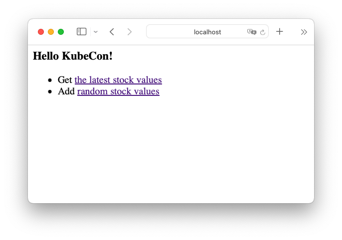
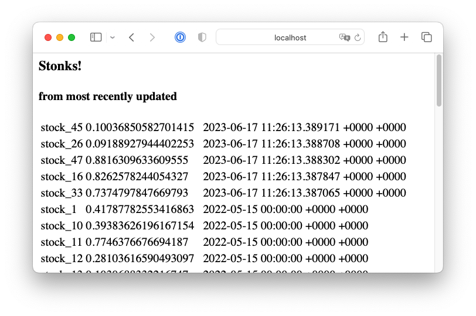

Developing Webapps With CloudNativePG, or, Unlocking DevOps

June 17, 2023 • 10 minutes

In this post I’d like to take you on the full journey moving your app written against PostgreSQL into a containerized, scalable app on a local Kubernetes cluster running queries against a CloudNativePG database. It is surprisingly quick and easy. You should be able to get through this in 10 minutes.
Why would you want to develop your app on a local Kubernetes cluster? There are two powerful reasons:
-
It unlocks DevOps for database-backed applications. One of the tenets of DevOps is to blur the line between development and production. A developer writing against PostgreSQL today may install the database locally, or perhaps use a
dockerimage to run the database locally, when developing applications. However, those applications will be deployed into an environment that is very different, with hot standby replicas, availability zones, and backup/restore solutions. Developing against CloudNativePG, developers can now test the resiliency and responsiveness of their applications in an environment that mirrors production. -
It makes available a lot of powerful components built by the Kubernetes community. For example, in the Quickstart guide for CloudNativePG you will find a section that takes you through installing the Prometheus Operator, with a Grafana dashboard to get metrics for your database. In a previous post, you can learn how to deploy Hasura to provide a GraphQL layer for your CloudNativePG cluster.
We’re going to be moving a very simple webapp written in Go that uses a PostgreSQL database. It only has two endpoints, one showing a list of stock tickers, another updating the listing with new stock values.
The only change the app need be aware of, once we containerize it and move it into our local Kubernetes cluster, is that the DB connection string will use the service created by CloudNativePG for the database, rather than a regular host name.
In a properly written 12-factor webapp, the host, user credentials and database names would be injected from environment variables (or an injected PGPASSFILE). If your webapp is written this way, no changes should be necessary to move it to Kubernetes / CloudNativePG.
Here’s the game plan:
- Follow the quickstart guide to get a local Kubernetes cluster with the CloudNativePG operator deployed
- Containerize the webapp with the provided Dockerfile
- Deploy a PostgreSQL cluster with CloudNativePG
- Populate the database with the initial schema and data
- Install your webapp with the provided Deployment + Service YAML
- Start a port-forwarding so you can view the webapp from your computer’s web browser
Hands-on
If you don’t yet have a local Kubernetes cluster, please refer to the
Quickstart guide.
You will need kind installed, as well as kubectl and docker.
If you want to run and compile the webapp locally to kick the tires, you will
also need the Go compiler - though this is not necessary if
you will only run it containerized.
We’re going to create a Kubernetes cluster from scratch using
KinD, and call it webapp-demo.
kind create cluster --name webapp-demo
This should run quickly. You can make sure it’s ready:
kubectl get nodes
NAME STATUS ROLES AGE VERSION
webapp-demo-control-plane Ready control-plane 114s v1.27.1
It’s a cluster with only one node, but you can easily create clusters with several worker nodes with KinD.
CloudNativePG operator
Now let’s install the CloudNativePG operator. As explained in the installation document, you can deploy it by applying the latest manifest. At the time of this writing, this is version 1.20.1:
kubectl apply -f \
https://raw.githubusercontent.com/cloudnative-pg/cloudnative-pg/release-1.20/releases/cnpg-1.20.1.yaml
The installation should take seconds, and you should find the deployment ready:
kubectl get deployments -n cnpg-system
NAME READY UP-TO-DATE AVAILABLE AGE
cnpg-controller-manager 1/1 1 1 18s
Containerizing the webapp
You can clone the webapp from its github project page. From the top-level directory of the checked-out project, containerize the app by running:
docker build -t myapp .
You should be able to see the image myapp in the docker images listing.
Now we’d like to load this image into our KinD cluster’s nodes.
kind load docker-image myapp:latest --name webapp-demo
(*) You could have uploaded your Dockerfile into a public container registry, and used its public handle in the following YAML files, but for local development and quick iteration, directly loading it may be preferable.
Creating a PostgreSQL cluster
Before we deploy the app, let’s create the simplest possible CloudNativePG cluster.
kubectl apply -f \
https://raw.githubusercontent.com/cloudnative-pg/cloudnative-pg/main/docs/src/samples/cluster-example.yaml
This YAML is part of a set of example cluster manifests provided with CloudNativePG that show off various features and are ready to deploy. You can find out more in the CloudNativePG documentation.
In a few seconds, you should have the PostgreSQL cluster cluster-example up
and ready. It is a 3-instance cluster, with a primary and two hot-standbys.
kubectl get clusters
NAME AGE INSTANCES READY STATUS PRIMARY
cluster-example 2m23s 3 3 Cluster in healthy state cluster-example-1
Populating the database
The database is empty, but the webapp assumes the existence of two tables representing stocks and stock tickers:
In the file example-changelog.sql
you can find:
--changeset jaime.silvela:1 labels:kubecon-demo
--comment: let's start off with 50 stocks
create table stocks as
select 'stock_' || generate_series as stock
from generate_series(1, 50);
--rollback DROP TABLE stocks;
--changeset jaime.silvela:2 labels:kubecon-demo
--comment: lets add a bunch of random stock values
create table stock_values as
with dates as (
SELECT generate_series as date
FROM generate_series('2020-01-01 00:00'::timestamp,
'2022-05-15 00:00', '24 hours')
)
select stock, date, random() as stock_value
from stocks cross join dates;
There are some comments there that are relevant for Liquibase. By all means, for development of applications, we strongly encourage that you use a database migration tool, but for this demo we can just push through and apply the changes manually.
Check with kubectl get clusters which is the primary instance of
cluster-example. Let’s assume it’s cluster-example-1, and let’s open
a psql terminal on it:
kubectl exec -ti cluster-example-1 -- psql app
This will open a session as the postgres superuser.
Applications should run database code with a less-privileged user.
By default, CloudNativePG creates a user called app, and a database owned
by it, also called app. This is a very reasonable default, but of course you
can configure your clusters to fit your needs.
The tables above should be created by the app user.
In our psql session, let’s switch:
SET role TO app;
Now you can simply copy and paste the SQL above. You should see two tables:
app=> \dt
List of relations
Schema | Name | Type | Owner
--------+--------------+-------+-------
public | stock_values | table | app
public | stocks | table | app
(2 rows)
There are 50 stocks in the stocks table, and 43300 stock values in
the stock_values table:
# SELECT * FROM stock_values ORDER BY date DESC;
stock | date | stock_value
----------+----------------------------+------------------------
stock_43 | 2022-05-15 00:00:00 | 0.1512641999535136
stock_50 | 2022-05-15 00:00:00 | 0.6586900953813299
stock_49 | 2022-05-15 00:00:00 | 0.052571752658662874
stock_48 | 2022-05-15 00:00:00 | 0.8326971243933354
stock_47 | 2022-05-15 00:00:00 | 0.2769466296850802
stock_46 | 2022-05-15 00:00:00 | 0.6096716690131085
. . .
. . . snipped
Deploying the webapp
OK, we’re now ready to deploy our webapp! The webapp-deploy.yaml manifest contains a deployment and a service for our webapp.
The deployment specifies we want 3 replicas for our webapp, and passes
the credentials for the app user for cluster-example.
The Service builds a load balancer to route traffic to any of the 3 replicas.
Simply apply the file:
kubectl apply -f webapp-deploy.yaml
service/mywebapp created
deployment.apps/mywebapp created
Right away you can see the 3 pods running the web server, as well as the 3 pods running our database:
kubectl get pods
NAME READY STATUS RESTARTS AGE
cluster-example-1 1/1 Running 0 27m
cluster-example-2 1/1 Running 0 27m
cluster-example-3 1/1 Running 0 27m
mywebapp-548d97848b-fprvh 1/1 Running 0 20s
mywebapp-548d97848b-vrv8f 1/1 Running 0 20s
mywebapp-548d97848b-whnnp 1/1 Running 0 20s
You can also see the load balancer for our webapp, as well as 3 services
for cluster-example (we’ll say more about them shortly.)
kubectl get svc
NAME TYPE CLUSTER-IP EXTERNAL-IP PORT(S) AGE
cluster-example-r ClusterIP 10.96.103.136 <none> 5432/TCP 29m
cluster-example-ro ClusterIP 10.96.252.145 <none> 5432/TCP 29m
cluster-example-rw ClusterIP 10.96.49.83 <none> 5432/TCP 29m
mywebapp LoadBalancer 10.96.128.43 <pending> 8088:30016/TCP 96s
Our webapp is now fully running! However, our local Kind cluster is not generally visible to the local network. Let’s add port forwarding of the application port for HTTP:
kubectl port-forward service/mywebapp 8080:8088
Forwarding from 127.0.0.1:8080 -> 8080
Forwarding from [::1]:8080 -> 8080
You should now be able to see the app in http://localhost:8080

Clicking on the latest stock values link:

You can also click on the “Add random stock values” link, and then go back on the stocks page, and you’ll see a few changed stock values.
Our webapp is deployed now as promised!
All in? Partially in?
We mentioned that our web application would use the service associated with
our CloudNativePG cluster. In fact, the service cluster-example-rw will always
point to the cluster’s primary instance. If there is a failover or a
switchover, the service will point to the new primary.
Notice there was another service called cluster-example-ro, which, you might
guess, acts as a load-balancer for our read-only replicas.
We glossed over authentication. Our Go app uses environment variables for the credentials to the database. In the webapp deployment manifest webapp-deploy.yaml you can find the following section:
... snipped ...
env:
- name: PG_PASSWORD
valueFrom:
secretKeyRef:
name: cluster-example-app
key: password
- name: PG_USER
valueFrom:
secretKeyRef:
name: cluster-example-app
key: username
This assumes the existence of a
Kubernetes secret
called cluster-example-app. Secrets are how Kubernetes handles sensitive
material like passwords or certificates.
The secret cluster-example-app was created by default by CloudNativePG,
(named <clusterName>-app for the app user).
By assuming the existence of a secret, and using convention over configuration, our webapp deployment manifest had no need to decode the credentials.
Secrets and Services though, are only available within a Kubernetes cluster. What if you wanted to deploy the database with CloudNativePG inside Kubernetes, but run the webapp, or some other components of the system, outside Kubernetes?
You can, of course, although you lose part of the convenience. We already saw the possibility of doing port-forwarding. Port-forwarding could be used to expose one or more of the CloudNativePG services over regular TCP ports. Credentials too would be handled without much trouble.
For further information, please refer to the use cases discussion.
Where to go from here
We’ve created a replicated webserver running inside a Kubernetes cluster, and a PostgreSQL cluster with 2 standbys, in under 10 minutes. We mentioned DevOps and blurring the line between development and production.
How about testing some failure scenarios?
We could create load on the webapp, introducing new stock values by repeatedly
hitting the /update endpoint.
Using the hey load generator:
hey -z 100s -q 1 -c 2 http://localhost:8080/update
And during this time, how about killing the primary instance?
kubectl delete pod cluster-example-1
The webapp might be momentarily unavailable, and you might see
pq: the database system is shutting down in the latests stocks page.
Recovery should take no longer than 1-2 seconds, as a replica would be
promoted by the CloudNativePG operator.
Since the webapp was written using the service, it will recover once
the new primary is in place.
But you might think that for read-only endpoints like the page showing
the latest stock values, the webapp could leverage the cluster-example-ro
service.
If it did, there would not be an outage when we killed the primary. These
are tradeoffs that you can now explore meaningfully at development time.
You could add connection pooling. CloudNativePG offers support out of the
box for PgBouncer through the Pooler resource.
You can find more information in the
connection pooling document.
There’s a lot of power to experiment and iterate through your system design.
We mentioned in the beginning that the quickstart guide takes you through adding Prometheus / Grafana monitoring for your database cluster. It would not be difficult to publish Prometheus metrics for your webserver too, and have a dashboard for your full system.
The point is that you have at your disposal an environment where you can test disaster recovery, realistic loads, scaling, upgrades, and any other day-2 operations you could want.
It’s a good time to be a developer!
Categories in this blog post
All categories
- Alerts
- Applications
- Blog
- Chaos-Engineering
- Cloudnativepg
- Cncf
- Cnpg
- Containers
- Continuous-Delivery
- Continuous-Integration
- Dashboards
- Dba
- Devops
- Failover
- Github
- Grafana
- Graphql
- Hasura
- Helm
- Imagecatalog
- Images
- Information
- K8s
- Kubernetes
- Lfx
- Linux
- Mentorship
- Migrations
- Open-Source
- Operator
- Pdb
- Performance
- Pg16beta1
- Pgbouncer
- PgTAP
- PGXN
- Pooler
- Postgres
- Postgresql
- Preview
- Programming
- Prometheus
- Release
- Service-Mesh
- Spotlight
- Sqitch
- Tablespaces
- Testing
- Tutorial
- Volumesnapshots
Latest Posts


Jonathan Gonzalez V.